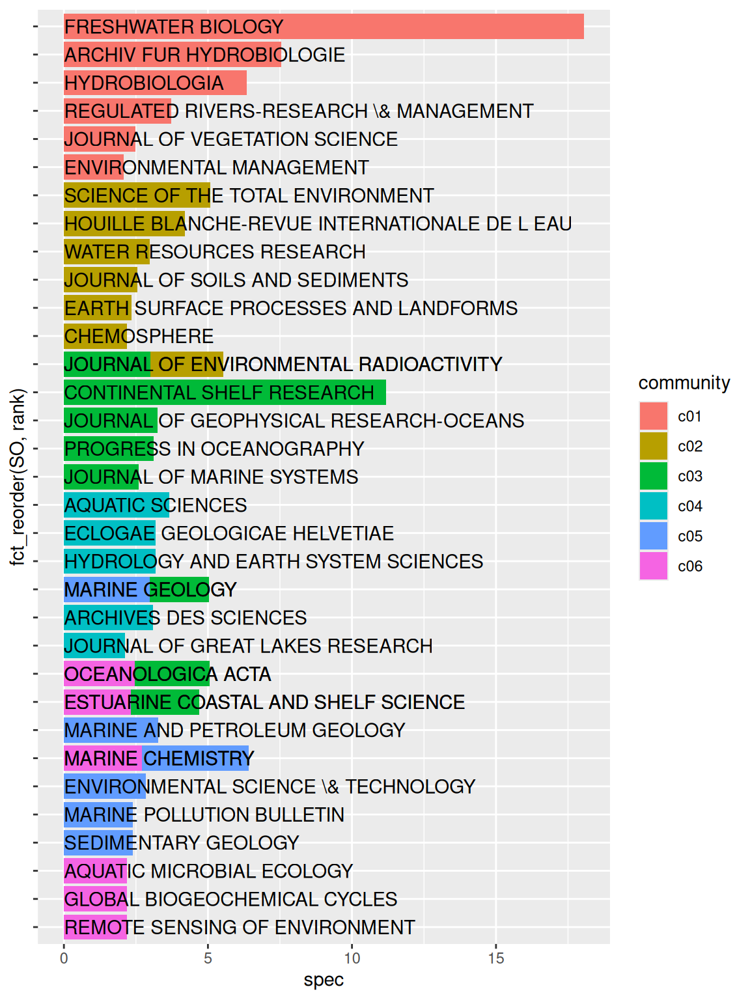

Code
# Chargement des packages et des données
library(tidyverse)
library(bibliometrix)
library(ggraph)
#library(tidygraph)
library(tidytext)
library(mixr)
set.seed(123)Chapitre introductif d’un ouvrage sur la recherche sur le Rhône (20 ans de ZABR-OHM). Création de:
# Chargement des packages et des données
library(tidyverse)
library(bibliometrix)
library(ggraph)
#library(tidygraph)
library(tidytext)
library(mixr)
set.seed(123)Import et nettoyage de la base .bib (exporté depuis Web of Science).
Dans titre ou topic: “Rhone” & “river|basin|catchment”. Filtre ultérieur pour retirer les mentions de Rhone présentes seulement dans les “Keywords +” (issus d’un algorithme de Web of Science reposant en partie sur les références biblio des documents)
file <- "data/savedrecs.bib"
if(!file.exists("data/data_trans/M.RDS")){
M <- convert2df(file = file,
dbsource = "isi",
format = "bibtex")
ind=which(M$PY>2018 & str_detect(M$AU,"ARNAUD F"))
M$AU[ind]=str_replace_all(M$AU[ind], "ARNAUD F","ARNAUD Fa")
ind=which(str_detect(rownames(M),"ARNAUD F, 2021"))
rownames(M)[ind]="ARNAUD Fa, 2021, EARTH SYST SCI DATA"
M=M %>%
mutate(DE=str_replace_all(DE,";;",";"))
saveRDS(M,"data/data_trans/M.RDS")
}
if(!file.exists("data/data_trans/results.RDS")){
results <- biblioAnalysis(M, sep = ";")
saveRDS(results,"data/data_trans/results.RDS")
}
M=readRDS("data/data_trans/M.RDS")
results=readRDS("data/data_trans/results.RDS")if(!file.exists("data/data_trans/tib_doc.RDS")){
tib_doc=M %>%
rownames_to_column(var="id_doc") %>%
as_tibble() %>%
tidyr::unite(texts,TI,AB,DE,sep="; ",remove=FALSE) %>%
mutate(Rhone=str_detect(texts,"RHONE")) %>%
filter(Rhone) %>%
select(-Rhone,-texts)
saveRDS(tib_doc,"data/data_trans/tib_doc.RDS")
}
tib_doc=readRDS("data/data_trans/tib_doc.RDS") %>%
mutate(period=cut(PY,breaks=c(1940,2000,2011,2023),dig.lab=4)) %>%
mutate(period=as.factor(period))if(!file.exists("data/data_trans/tib_auteur.RDS")){
tib_auteur=tib_doc %>%
group_by(id_doc) %>%
nest() %>%
mutate(data=purrr::map(data,
~mutate(.x,
AU=str_split(AU,";")))) %>%
mutate(data=purrr::map(data,
~unnest(.x, cols=c("AU")))) %>%
unnest(cols="data") %>%
mutate(AU_rank=1:n()) %>%
ungroup()
saveRDS(tib_auteur,"data/data_trans/tib_auteur.RDS")
}
tib_auteur=readRDS("data/data_trans/tib_auteur.RDS")if(!file.exists("data/data_trans/tib_motscles.RDS")){
tib_motscles= tib_doc %>%
group_by(id_doc) %>%
nest() %>%
mutate(data=purrr::map(data,
~mutate(.x,DE=str_split(DE,";")))) %>%
mutate(data=purrr::map(data,
~unnest(.x, cols="DE"))) %>%
unnest(cols="data") %>%
ungroup()
saveRDS(tib_motscles,"data/data_trans/tib_motscles.RDS")
}
tib_motscles=readRDS("data/data_trans/tib_motscles.RDS")if(!file.exists("data/data_trans/aut_loc.RDS")){
LCR=localCitations(M)
#LCR$Authors$Author liste des auteurs cités dans le champ M$CR
#Combien de fois chacun de ces auteurs apparaît dans M$CR?
#Attention ce résultat ne correspond pas à celui renvoyé par localCitations() voir objet LCR
aut_loc=LCR$Authors %>%
as_tibble() %>%
select(Author) %>%
filter(!(Author %in% c("DE","LE","VAN","[ANONYMOUS] A"))) %>%
mutate(ncit_loc=purrr::map_int(Author, ~length(which(str_detect(M$CR,.x)))))
saveRDS(aut_loc,"data/data_trans/aut_loc.RDS")
}if(!file.exists("data/data_trans/auteurs.csv")){
aut_loc=readRDS("data/data_trans/aut_loc.RDS")
auteurs=tib_auteur %>%
group_by(AU) %>%
mutate(ndoc=n(),
ncit=sum(TC)) %>%
summarise(ndoc=unique(ndoc),
ncit=unique(ncit),
ndoc_1st=sum(AU_rank==1),
ncit_1st=sum(TC[which(AU_rank==1)])) %>%
ungroup() %>%
left_join(aut_loc,by=c("AU"="Author")) %>%
arrange(desc(ndoc))
write_csv2(auteurs, "data/data_trans/auteurs.csv")
}
auteurs=read_csv2("data/data_trans/auteurs.csv")Le corpus compte 3432 auteurs distincts. Un auteur est associé à en moyenne 1.7377622 documents du corpus. 901 sont associés à au moins 2 documents, 198 sont associés à au moins 5 documents.
ggplot(auteurs, aes(x=ndoc)) +
geom_bar()
if(!file.exists("data/data_trans/sources.csv")){
sources=tib_doc %>%
mutate(n_tot=n(),
ncit_tot=sum(TC)) %>%
group_by(SO,n_tot,ncit_tot) %>%
summarise(ndoc=n(),
ncit=sum(TC)) %>%
mutate(pct_doc=round(ndoc/n_tot*100,1),
pct_cit=round(ncit/ncit_tot*100,1)) %>%
arrange(desc(ndoc)) %>%
select(-n_tot,-ncit_tot)
write_csv2(sources,"data/data_trans/sources.csv")
}
sources=read_csv2("data/data_trans/sources.csv")reactable::reactable(sources,
filterable=TRUE)Voir section Section 2.2
Les articles du corpus font référence à des documents locaux (du corpus) ou externes.
Attention Une partie (minime: ~0.7%) de ces références est mal renseignée par WOS. Celles qui sont correctement renseignées le sont de telle sorte qu’il est difficile de faire une jointure pour retrouver les références locales.
cit=citations(M)
cit$Cited %>% as_tibble %>%
summarise(nref=sum(n),
nref_distinctes=n(),
nref_pb=length(which(str_detect(CR,"ANONYMOUS"))))# A tibble: 1 × 3
nref nref_distinctes nref_pb
<int> <int> <int>
1 101397 67623 736Top 100 des articles les plus cités par le corpus:
citations=cit$Cited %>%
as_tibble() %>%
filter(!str_detect(CR,"ANONYMOUS"))
reactable::reactable(citations %>% head(100),
filterable=TRUE)ggplot(tib_doc,
aes(x=PY))+
geom_bar()+
xlab("année de publication")+ylab("nombre de publications")
Quels sont les documents qui font mention des termes SOCIAL/SOCIETY/SOCIO-quelque-chose dans leur abstract?
tib_doc_SHS=tib_doc %>%
mutate(mention_SHS=str_detect(AB,"SOCIAL|SOCIETY|SOCIO"))
id_SHS=tib_doc_SHS %>%
filter(mention_SHS) %>%
pull(id_doc)
prop_SHS=tib_doc_SHS %>%
group_by(mention_SHS) %>%
summarise(n=n())
prop_SHS# A tibble: 3 × 2
mention_SHS n
<lgl> <int>
1 FALSE 1313
2 TRUE 53
3 NA 76=> Peu de documents étiquetés “SHS” a priori (3.88% des documents pour lesquels on dispose de l’abstract) mais ce premier ensemble va nous permettre de rechercher les termes spécifiques aux SHS et d’identifier un “courant SHS” plus important et transverse (cf partie Section 3.1)
On définit des communautés d’auteurs en se basant sur les collaborations (co-signature de documents).
nw_coll_auth <- biblioNetwork(M,
analysis = "collaboration",
network = "authors",
sep = ";")set.seed(12345)
p=networkPlot(nw_coll_auth,
Title = "Collaborations",
type = "fruchterman",
cluster="louvain",
size=5,
size.cex=T,
labelsize=0.5,
label.n=30,
label.cex=F,
alpha=0.5,
#remove.isolates=TRUE,
#edges.min=1,
verbose=FALSE,
community.repulsion=0)
auteurs=read_csv2("data/data_trans/auteurs.csv")
auteurs=auteurs %>%
mutate(au=tolower(AU)) %>%
left_join(p$cluster_res,by=c("au"="vertex")) %>%
mutate(cluster=paste0("cluster",str_pad(cluster,4)))A ce stade, de nombreuses communautés (auteurs$cluster %>% unique() %>% length()) sont définies. Pour la suite de l’analyse on ne conservera que les communautés à l’origine d’un nombre minimal de documents du corpus.
Quand cela est possible et en se basant sur la communauté dont fait partie ses auteurs, chaque document du corpus est lui-même rattaché à une communauté.
On utilise pour cela la communauté dont les auteurs du document font majoritairement partie, en appliquant une pondération selon le rang de l’auteur.
On attribue au \(k\)-ième auteur d’un document qui en compte \(n\) en tout un poids \(w\) de
\[w=(n-k+1)\frac{2}{n(n+1)}\] soit par exemple pour un document qui compte 4 auteurs des poids de 0.4,0.3,0.2 et 0.1 pour le premier, deuxième, troisième et quatrième auteur respectivement.
Dans le cas où la majorité des auteurs ne fait pas partie d’une communauté définie, on assigne le document à la communauté majoritaire (par exemple si 30% des auteurs font partie de la communauté Cl01 et 70% ne font pas partie d’une communauté définie on assigne le document à la communauté Cl01).
get_commu=function(dat){
res=dat %>%
na.omit()
if(nrow(res)>=1){
res=res %>%
filter(!is.na(cluster)) %>%
group_by(cluster) %>%
summarise(weight=sum(weight)) %>%
filter(weight==max(weight))
}else{res=NA}
return(res)
}
tib_commus=tib_auteur %>%
select(id_doc,AU,AU_rank) %>%
group_by(id_doc) %>%
mutate(n=n()) %>%
mutate(weight=2*(n-AU_rank+1)/(n*(n+1))) %>%
ungroup() %>%
left_join(auteurs%>% select(AU,cluster)) %>%
group_by(id_doc,cluster) %>%
summarise(weight=sum(weight,na.rm=TRUE))
tib_1doc_1commu=tib_commus%>%
ungroup() %>%
group_by(id_doc) %>%
nest() %>%
mutate(data=purrr::map(data,get_commu)) %>%
unnest(data)
tib_commus_period_prod=
tib_commus %>%
left_join(tib_doc %>% select(id_doc,period))%>%
group_by(cluster,period) %>%
summarise(neqdoc=sum(weight),
ndoc=n())Pour la suite des analyses on va sélectionner un nombre limité de communautés (toutes celles comptant au moins 50 documents dans le corpus et au moins 80 auteurs).
tib_commus_prod=tib_commus_period_prod %>%
group_by(cluster) %>%
summarise(neqdoc=sum(neqdoc),
ndoc=sum(ndoc)) %>%
left_join(auteurs %>% group_by(cluster) %>% summarise(naut=n()),
by="cluster") %>%
ungroup() %>%
mutate(ndoc_tot=sum(ndoc),
naut_tot=sum(naut)) %>%
mutate(pct_doc=round(ndoc/ndoc_tot*100,1),
pct_aut=round(naut/naut_tot*100,1)) %>%
select(-ndoc_tot,-naut_tot) %>%
arrange(desc(ndoc)) %>%
mutate(community=case_when(ndoc>=50 & naut>80~paste0("c",str_pad(1:n(),pad="0",width=2)),
TRUE~NA_character_)) %>%
group_by(community)
tib_clusters_commus=tib_commus_prod %>%
select(cluster,community)
tib_commus_prod=tib_commus_prod %>%
select(-cluster) %>%
group_by(community) %>%
summarise_all("sum")
reactable::reactable(tib_commus_prod,pagination=FALSE)tib_doc=tib_doc %>%
left_join(tib_1doc_1commu %>%
left_join(tib_clusters_commus,by="cluster") %>%
select(-cluster),
by="id_doc")
tib_doc_save=tib_doc %>%
arrange(desc(TC)) %>%
select(id_doc,community,weight, AU, PY, TI, SO, DE)
readr::write_csv2(tib_doc_save, "datashare/documents.csv")auteurs=auteurs %>%
left_join(tib_clusters_commus,by="cluster") %>%
select(-cluster)
readr::write_csv2(auteurs,"datashare/auteurs.csv")
reactable::reactable(auteurs %>% arrange(community),
groupBy="community",
sortable=TRUE,
filterable=TRUE,
pagination=FALSE,
paginateSubRows=TRUE)reactable::reactable(tib_doc_save %>% select(-id_doc),
filterable=TRUE,
resizable=TRUE)tib_doc_period=tib_doc %>%
group_by(community,period) %>%
summarise(neqdoc=sum(weight)) %>%
ungroup() %>%
na.omit()
ggplot(tib_doc_period,aes(x=community,y=neqdoc))+
geom_col(aes(fill=community,position=period),col="black",position="dodge")
liste_auteurs_graph=auteurs %>%
filter(!is.na(community)) %>%
pull(AU)
ndoc_auteurs_graph=tib_auteur %>%
filter(AU %in% liste_auteurs_graph) %>%
pull(id_doc) %>% unique() %>%
length()Le graphe ci-après représente les collaborations des 1779 auteurs qui ont été rattachés à une communauté que l’on a conservé pour la suite des analyses.
Ces 1779 auteurs représentent 51.84% des auteurs du corpus, mais 61% des documents du corpus ont au moins un de ces auteurs comme n-ième auteur.
auteurs_keep=auteurs %>%
select(au,community,ndoc) %>%
mutate(keep=ndoc>15) %>%
group_by(community) %>%
arrange(desc(ndoc)) %>%
mutate(rank=1:n()) %>%
mutate(keep=rank<=3) %>%
mutate(showname=case_when(keep~au,
!keep~NA_character_))
set.seed(1234)
tidyg=tidygraph::as_tbl_graph(p$graph) %>%
tidygraph::activate(nodes) %>%
select(-community) %>%
filter(name %in% tolower(liste_auteurs_graph)) %>%
left_join(auteurs_keep,by=c("name"="au"))
ggraph(tidyg,layout="fr")+
geom_edge_link(color="light grey")+
geom_node_point(aes(color=community,size=ndoc))+
geom_node_text(aes(label=showname))
kw_communities=tib_doc%>%
unnest_tokens(output="kw",input="DE",token=stringr::str_split, pattern = "; ")
spec_com=tidy_specificities(kw_communities,cat1=kw,cat2=community,top_spec=20) %>%
arrange(community,desc(spec))
plot_specificities(spec_com,kw,community)
Les journaux associés aux différentes communautés permettent également de les caractériser. Ci-dessous, les publications scientifiques spécifiques (significatif au seuil de 1% i.e. score de spécificité >2).
spec_SO=tidy_specificities(tib_doc,cat1=SO,cat2=community,min_spec=2) %>%
arrange(community,desc(spec)) %>%
mutate(rank=n():1) %>%
select(community, SO, spec, n,rank)
ggplot(spec_SO %>% filter(spec>2),aes(x=fct_reorder(SO,rank), y=spec))+
geom_col(aes(fill=community))+
geom_text(aes(y=0,label=SO),hjust=0)+
coord_flip()+
theme(axis.text.y=element_blank())
# community during period has cited ref *n* times
cites=tib_doc %>%
filter(!is.na(PY)) %>%
select(id_doc,PY,community, CR,period) %>%
unnest_tokens(output="ref",input="CR",
to_lower=FALSE,
token=stringr::str_split, pattern="; ") %>%
mutate(ref=str_extract(ref,"^[^,]*,[^,]*,[^,]*,")) %>%
mutate(ref=str_replace(ref,",$",""))%>%
group_by(community,period, ref) %>%
summarise(n=n()) %>%
ungroup()
# community at the end of period had authored
# a cumulated number of docs *ndoc*
ndoc=tib_doc %>% group_by(community,period) %>% summarise(ndoc=n()) %>%
mutate(ndoc=cumsum(ndoc)) %>%
ungroup()
# community during period has cited *nref* documents
# community at the end of period had authored
# a cumulated number of docs *ndoc*
nodes=cites %>%
group_by(community,period) %>%
summarise(nref=sum(n)) %>%
ungroup() %>%
left_join(ndoc) %>%
na.omit() %>%
tidyr::unite(col=name,community,period,sep="-",remove=FALSE)
# community during period has cited:
# - a total of *ntotref* documents
# - documents authored by community_cited *n* times
# The proportion of references authored by community_cited
# among all references is *prop*
edges=cites %>%
left_join(tib_doc %>% select(id_doc,community_cited=community),
by=c("ref"="id_doc")) %>%
group_by(period,community) %>%
mutate(ntotref=n()) %>%
ungroup() %>%
group_by(period,community,community_cited,ntotref)%>%
summarise(n=sum(n)) %>%
mutate(prop=n/ntotref*100) %>%
na.omit() %>%
ungroup() %>%
tidyr::unite(col=from,community,period,sep="-",remove=FALSE) %>%
tidyr::unite(col=to,community_cited,period,sep="-",remove=FALSE)
# The graph layout is calculated according to all citation links,
# regardless of period
edges_tot=edges %>%
group_by(community_cited,community) %>%
summarise(ntot=sum(n))
set.seed(1234)
coords=igraph::layout_with_fr(igraph::graph_from_data_frame(edges_tot)) %>%
as_tibble() %>%
setNames(c("x","y")) %>%
mutate(community=paste0("c",str_pad(1:n(),pad="0",width=2)))
edges=edges %>%
mutate(loop=community==community_cited) %>%
mutate(from=case_when(loop~paste0(from,"-copy"),
!loop~from))
nodes=nodes %>%
left_join(coords)
nodes=nodes %>%
mutate(loop=FALSE) %>%
bind_rows(nodes %>%
mutate(loop=TRUE,
name=paste0(name,"-copy"),
y=y-0.6))
# create graph
pcit=tidygraph::tbl_graph(nodes=nodes,
edges=edges)#plot graph
ggraph(pcit,nodes)+
geom_edge_fan(aes(edge_width=prop,color=community_cited,alpha=prop),
arrow=arrow(length=unit(0.15,"inches"),
angle=15),
end_cap = circle(4, 'mm'),
start_cap = circle(4, 'mm'))+
geom_node_point(data=nodes %>% filter(!loop),
aes(fill=community,size=ndoc), alpha=0.5,shape=22)+
geom_node_text(data=nodes %>% filter(!loop),
aes(label=community))+
facet_wrap(facets=vars(period),nrow=3)+
scale_size_continuous(range=c(1,20))+
scale_x_continuous()+
scale_y_continuous()+
guides(color=FALSE)
Les noeuds de ce graphe représentent les documents du corpus écrits par la communauté d’auteurs ClX au cours d’une période. La taille des noeuds correspond au nombre total de documents écrits entre 1947 et la fin de la période considérée. Ces documents s’appuient sur des références bibliographiques dont une partie prop correspond à des documents écrits par des membres de la communauté elle-même (flèches verticales) ou d’autres communautés (flèches pointant vers ces autres communautés). Remarque: on prend en compte le nombre d’occurrence des documents et non le nombre de documents distincts. La proportion est représentée par l’épaisseur et l’opacité des flèches.
nw_cooc_kw <- biblioNetwork(M,
analysis = "co-occurrences",
network = "keywords",
sep = ";")
netstat <- networkStat(nw_cooc_kw)p=networkPlot(nw_cooc_kw,
weighted=T, n = 150,
Title = "Co-occurence des mots-clés",
type = "fruchterman",
cluster="louvain",
size=T,
edgesize = 5,
labelsize=0.7)M=M %>%
mutate(CR=str_replace(CR,"ANONYMOUS.*;","")) %>%
mutate(CR=str_replace(CR,"NO TITLE CAPTURED",""))
nw_cocit_doc <- biblioNetwork(M,
analysis = "co-citation",
network = "references",
sep = ";")
p=networkPlot(nw_cocit_doc,
n = 150,
Title = "Co-Citation Network",
type = "auto",
size=T,
cluster="louvain",
remove.multiple=FALSE,
labelsize=0.7,
edgesize = 5,
label.n=30)
CS <- conceptualStructure(M,
field="ID",
method="MCA",
minDegree=10,
clust=8,
stemming=FALSE,
labelsize=10,
documents=3,
graph=FALSE)
CS$graph_terms
CS$graph_dendrogramNULL### Mise en forme de la base
tib_doc_light=tib_doc %>%
select(id_doc,TI,AU,SO,DT,DE,TC,PY,AB)
if(!file.exists("data/data_trans/tib_lemma_cl.RDS")){
### Tokenisation, lemmatisation:
tib_lemma=tib_doc_light %>%
unnest_tokens(word,AB,token="words")
lex_en=mixr::get_lexicon("en")
tib_lemma_cl=left_join(tib_lemma, lex_en,by="word") %>%
filter(type %in% c("nom","ver","adj"))
saveRDS(tib_lemma_cl,"data/data_trans/tib_lemma_cl.RDS")
}
tib_lemma_cl=readRDS("data/data_trans/tib_lemma_cl.RDS")
if(!file.exists("data/data_trans/tib_sparse.RDS")){
### mise en forme pour STM
tib_sparse=tib_lemma_cl %>%
group_by(lemma) %>% # compte pour chaque lemme...
mutate(n=n()) %>% # ...son nombre d'occurrences puis
filter(n>20) %>% # retire ceux représentés moins de 20 fois dans le corpus
ungroup() %>%
cast_sparse(row=TI, column=lemma, value=n)
saveRDS(tib_sparse,"data/data_trans/tib_sparse.RDS")
}
tib_sparse=readRDS("data/data_trans/tib_sparse.RDS")Voici les termes les plus spécifiques des abstracts contenant “SOCIETY/SOCIAL/SOCIO”:
library(mixr)
tib_lemma_cl=tib_lemma_cl %>%
mutate(mention_SHS=as.factor(id_doc %in% id_SHS))
spec=tidy_specificities(tib_lemma_cl,
cat1=lemma,
cat2=mention_SHS,min_spec=5) %>%
filter(mention_SHS=="TRUE") %>%
select(-mention_SHS)
reactable::reactable(spec)On va retenir les termes qui permettent d’identifier une dimension SHS et qui n’ont pas a priori un sens autre dans un autre contexte (par ex. on écarte “MANAGEMENT”):
“RESTORATION”,“STAKEHOLDER”,“DISCOURSE”,“ONTOLOGY”,“PRACTITIONER”,“ACTOR”
Combien de documents mentionnent au moins un de ces termes dans leur abstract?
termes_SHS=c("RESTORATION","STAKEHOLDER","DISCOURSE","ONTOLOGY","PRACTITIONER","ACTOR")
tib_doc %>%
mutate(mention_restoration=str_detect(AB,str_c(termes_SHS,collapse="|"))) %>%
group_by(mention_restoration) %>%
summarise(n=n())# A tibble: 3 × 2
mention_restoration n
<lgl> <int>
1 FALSE 1062
2 TRUE 314
3 NA 77Quelles sont les communautés d’auteur dans lesquelles ces termes sont les plus pregnants?
termes_shs=tolower(termes_SHS)
kw_communities %>% mutate(shs=str_count(kw,str_c(termes_shs,collapse="|"))) %>%
group_by(community) %>%
summarise(ntot=n(),
nshs=sum(shs,na.rm=TRUE)) %>%
mutate(prop=nshs/ntot*100)# A tibble: 12 × 4
community ntot nshs prop
<chr> <int> <int> <dbl>
1 c01 1088 19 1.75
2 c02 328 0 0
3 c03 320 1 0.312
4 c04 376 1 0.266
5 c05 380 1 0.263
6 c06 279 0 0
7 c07 234 1 0.427
8 c08 274 3 1.09
9 c09 242 0 0
10 c10 262 5 1.91
11 c11 180 2 1.11
12 <NA> 2527 8 0.317library(stm)
if(!file.exists("data/data_trans/topic_model.RDS")){
set.seed(123)
topic_model<-stm(tib_sparse,K=8, verbose=FALSE)
saveRDS(topic_model,"data/data_trans/topic_model.RDS")
}
topic_model=readRDS("data/data_trans/topic_model.RDS")thematiques=tidytext::tidy(topic_model, matrix="beta") %>%
group_by(topic) %>%
slice_max(beta,n=20) %>%
mutate(rank=row_number()) %>%
arrange(topic,desc(beta)) %>%
ungroup()ggplot(thematiques %>%
mutate(topic=as.factor(topic)) %>%
mutate(term=tidytext::reorder_within(term,by=beta,within=topic)),
aes(x=beta,y=term, fill=topic))+
geom_bar(stat="identity")+
facet_wrap(facets=vars(topic), scales="free")+
theme(legend.position="none")+
tidytext::scale_y_reordered()
thematiques=thematiques %>%
group_by(topic) %>%
nest()%>%
summarise(topic_terms=map(data, ~paste(.$term,collapse=", "))) %>%
unnest(cols=c(topic_terms)) %>%
mutate(topic_short=case_when(topic==1~"hydrologie",
topic==2~"transport sédimentaire",
topic==3~"modélisation",
topic==4~"écologie",
topic==5~"biochimie",
topic==6~"quantification",
topic==7~"changements,risques",
topic==8~"étude régionale"))tib_gamma <- tidy(topic_model, matrix = "gamma") %>%
arrange(document,desc(gamma))
tib_doc_th=tib_doc_light %>%
mutate(document=1:n()) %>%
left_join(tib_gamma,by="document") %>%
left_join(thematiques,by="topic")
ggplot(tib_doc_th%>%
group_by(PY,topic,topic_short) %>%
summarise(sgamma=sum(gamma),
n=n()) %>%
ungroup() %>%
mutate(sgamma=sgamma/n) %>%
na.omit(),
aes(x=PY,y=sgamma,col=topic_short))+
geom_smooth()
tib_auteur_th=tib_auteur %>%
left_join(tib_doc_th %>% select(id_doc,topic,gamma,topic_terms,topic_short),
by="id_doc") %>%
group_by(AU) %>%
mutate(ndoc=n()) %>%
ungroup() %>%
group_by(AU,topic,topic_short) %>%
summarise(s=sum(gamma),
ndoc=unique(ndoc)) %>%
mutate(s=s/ndoc) %>%
arrange(desc(ndoc)) %>%
ungroup() %>%
na.omit()
top_auteurs=tib_auteur_th %>% group_by(AU) %>% summarise(n=unique(ndoc)) %>% top_n(10) %>% pull(AU)
ggplot(tib_auteur_th %>% filter(AU %in% top_auteurs),
aes(x=topic_short,y=s,fill=factor(topic_short)))+
geom_col()+
facet_wrap(facets=vars(AU))+
coord_flip()
bibliometrix comprend des fonctions permettant d’extraire automatiquement les éléments d’affiliation distincts et les références mais ça fonctionne moyen (de fait il est déjà assez difficile d’en faire sens au niveau de l’export WOS…)
aff=results$Affiliations %>%
as_tibble() %>%
head(n=50)
reactable::reactable(aff)Il est ainsi assez difficile de travailler sur les affiliations de manière “non dirigée”… Par exemple pour les publis Hervé et en filtrant pour garder les publis récentes (>2005) on a déjà 34 affiliations formulées de manière différentes (tout est mélangé pour les différents auteurs des articles) et en fonction du champ l’info principale n’est pas toujours la même (ici pas de mention de EVS par ex.).
Par contre on pourrait imaginer lister un certain nombre de structures (CNRS, EVS, LBBE, LEHNA, etc) et tenter de détecter à partir de cet ensemble quels auteurs/publis s’y rattachent…
Des infos sont enregistrées dans la base de données WOS concernant les programmes de recherche et les sources de financement. On peut récupérer ces renseignements pour environ un tiers des documents. Si on veut s’en servir il y aura un peu de nettoyage à faire…
if(!file.exists("data/data_trans/bibtib.RDS")){
bib=bibtex::read.bib("data/savedrecs.bib")
bibtib=tibble(WOS_ID=names(bib),
funding_text=NA,
funding_acknowledgement=NA)
for(i in 1:length(bib)){
biblist=unlist(bib[i])
var_text=paste0(bibtib$WOS_ID[i],".funding-text")
var_ackn=paste0(bibtib$WOS_ID[i],".funding-acknowledgement")
if(var_text %in% names(biblist)){
bibtib$funding_text[i]=biblist[[var_text]]
}else{
bibtib$funding_text[i]=NA
}
if(var_ackn %in% names(biblist)){
bibtib$funding_acknowledgement[i]=biblist[[var_ackn]]
}else{
bibtib$funding_acknowledgement[i]=NA
}
}
bibtib =bibtib %>%
mutate(funding_text=str_replace_all(funding_text,"\\{\\[\\}","[")) %>%
mutate(funding_acknowledgement=str_replace_all(funding_acknowledgement,"\\{\\[\\}","["))%>%
mutate(funding_text=str_replace_all(funding_text,"``|\\{''\\}|\\n","")) %>%
mutate(funding_acknowledgement=str_replace_all(funding_acknowledgement,"``|\\{''\\}|\\n",""))%>%
mutate(funding_text=str_replace_all(funding_text,"\\s+"," ")) %>%
mutate(funding_acknowledgement=str_replace_all(funding_acknowledgement,"\\s+"," "))
saveRDS(bibtib,"data/data_trans/bibtib.RDS")
}
bibtib=readRDS("data/data_trans/bibtib.RDS")financeurs=bibtib %>%
filter(!is.na(funding_acknowledgement)) %>%
group_by(funding_acknowledgement) %>%
summarise(ndoc=n()) %>%
arrange(desc(ndoc))
reactable::reactable(financeurs,
filterable=TRUE)financeurs %>%
mutate(ZABR=str_detect(funding_acknowledgement,
"ZABR|Zone Atelier Bassin du Rh.ne|GRAIE|OHM|OSR")) %>%
group_by(ZABR) %>%
summarise(n=n())# A tibble: 2 × 2
ZABR n
<lgl> <int>
1 FALSE 624
2 TRUE 34